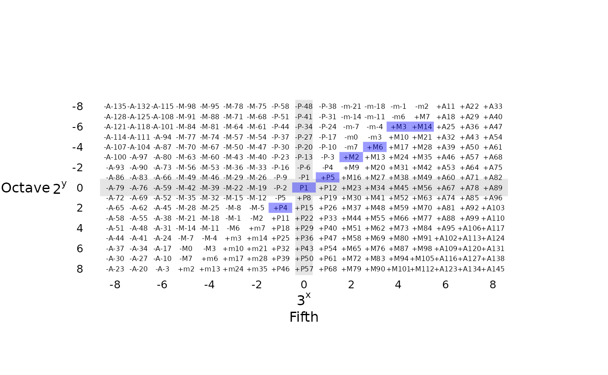

Pitch and Tonality in humdrumR
Nathaniel Condit-Schultz
2022-03-02
Source:vignettes/PitchAndTonality.Rmd
PitchAndTonality.RmdAs a computational musicology toolkit, humdrumR’s tools for analyzing and manipulating pitch data are just about the most important tools in the toolbox. For the most part, humdrumR’s pitch tools are focused on the Western system of tonality, and tools for representing pitches in a tonal context are the focus of this vignette—we also have standard tools for looking at pitch from a Western, 12-tone atonal setting as well.
Pitch, and the tonal organization of pitch, is represented in humdrumR using three S4 classes and associated methods:
-
struct-
tonalInterval(pitches) -
diatonicSet(keys)-
tertianSet(chords)
-
-
tertianSet inherits from diatonicSet—thus any tertianSet is also a diatonicSet. (All three classes inherit from struct, giving them generic atomic-vector-like behavior.)
If know Western music theory, how to Western read music, or even the basics of giving names to pitches and chords, you should be able to get started with humdrumR pitch tools very quickly. This vignette takes the time to really explain how and why the humdrumR tonal system is set up. Fortunately, many sections are marked with “tl;dr” summaries, so you can skip to (sub)sections that are relevant to you.
- Section xxx talks in detail about the music theoretic logic of the
humdrumRsystem. - Section xxx talks about how
humdrumRencodes tonal logic. - Section xxx talks about the functions and tools that
humdrumRactually offers for you to work with tonal pitch data!
If you really want to just get started coding ASAP, start with section XXX, and feel free to peruse the earlier sections at your leisure to get that deeper understanding.
Tonal Intervals
tl;dr:
humdrumRencodes tonal pitch information as intervals on the fundamental line-of-fifths (tonal), combined with an octave value to indicate pitch height,.
The tonalInterval class is the core pitch representation in humdrumR. As the name suggests, pitch is encoded tonally. That means that the focus of the representation is the line-of-fifths (LoF). Pitch names (letters and accidentals), intervals, diatonic keys and tertian harmonies all make the most logical sense defined on the line-of-fifths. When we want to define specific pitches in frequency space, we have to add specific “pitch-height” information, which is encoded as a separate octaves field.
Psychoacoustics and the Western Tuning System
tl;dr: Tonal intervals are represented as combinations of octaves (second harmonic, 2:1 ratio) and perfect 12ths (third harmonic, ~3:1 ratio). The perfect 12ths represent the circle-of-fifths and all diatonic collections while the octaves help specific specific pitch height.
At first glance, pitch appears to by a straightforward, one-dimensional phenomenon: every “pitched event” has a frequency (perceptually) associated with it. We refer to the frequency associated with an event as it’s “pitch”—here, we’ll use the term frequency and pitch interchangeably.
Human can percieve frequencies ranging from approximately \(20\)–\(20,000_{Hz}\). (“Hz” is an abbreviation for Hertz; e.g. cycles-per-second.)
However, our perception of pitch is predominantly relative, not absolute. In other words, (most of us) can’t identify specific frequenncies in isolation; instead, we percieve the “distance” between pitches, what we call an interval. More specfically, we percieved distance/intervals between frequencies rationally: the distance we percieve is the ratio between the pitches. For example, the “distance” between the frequencies \(200_{Hz}\) and \(300_{Hz}\) is the same as the distance between \(2,400_{Hz}\) and \(3,600_{Hz}\). Why? Because they are the same ratios: \(\frac{200}{300} = \frac{2,400}{3,600}\)! This means that it makes more sense to think of the enormous \(20\)–\(20,000_{Hz}\) frequency range we percieve on a logarithmic scale, which makes the equal distance look equal on paper:

Octave Equivalence
We perceive the distance (interval) between pitches based on the ratio between their frequencies. But not all ratios are created equal! The simplest, integer ratios are privileged in our perception—they simply sound better, more consonant, to us! Integer ratios between frequencies are called harmonics. The simplest, purest harmonic relationship is the 2-to-1 ratio, which we call an octave. Pitches separated by an octave are so consonant that we actually perceive them as being “the same pitch” (in some respects). We call this sameness octave equivalence. If two pitches are octave equivalent—i.e., the ratio between their frequencies is a power of two—we say that they are the same pitch chroma. In the following figure, the three rows of frequencies each represent groups of pitches that are equivalent chroma:
Due to the perceptual reality of octave equivalence, most (essentially all) musical scales use the octave as a bounding point—the same patterns of pitch chroma (e.g., scales) are repeated in each octave we can perceive. Thus, even though we can perceive close to ten octaves worth of frequencies, the organization of pitch in music is mostly based on pitches that can be squeezed into a single octave.
Tonal Harmonics
The 2-to-1 harmonic octave, however, is not the whole story. The next couple of integer (harmonic) ratios are also special, perceptually: Both the third and the fifth harmonics—corresponding to the major scale degrees \(\hat{5}\) (perfect fifth) and \(\hat{3}\) (major third) respectively—have influenced the development of Western tonality. That is to say, most musical scales are tuned in such a way as to create ratios between scale degrees that are as close to the 3-to-1 or 5-to-1 as possible. “Just intonation” is the preeminent Western example.
The third harmonic (\(\approx\hat{5}\)) is the primary factor in the Western tonal system—in humdruMR we call it the tonal harmonic. The Western diatonic scale is constructed, fundamentally, from arranging 3rd-harmonic intervals within the octave. The logical result of this approach is an octave divided into five (pentatonic), seven (diatonic), or twelve (chromatic) unequal steps.
The seven-note diatonic has been the fundamental unit of Western tonality for several thousand years. The chromatic (12-note) superset has gradually grown in prominence over the last five centuries, yet in most tonal contexts, the chromatic set is still distinctly a superset of the diatonic, seen as a diatonic set plus five “alterations.”
Thus, the 3rd-harmonic is the fundamental generator of the Western diatonic scale, diatonic keys, and tonality in general. Throughout humdrumR we often refer to the line-of-fifths (or circle-of-fifths), where the “fifths” are those stacked up 3rd harmonics.
Pythagorean Tuning
tl;dr: This sections talks about how the abstract line-of-fifths of “tonal harmonics” is tuned to actual pitches. For the most part, it doesn’t really matter that much within Western music; we assume equal temperament most of the time. Most tonal analyses don’t really depend on the specific flavor of Western tuning/temperament you use.
A scale actually tuned to “pure” 3rd-harmonics results in the pythagorean tuning. However, for centuries, Western musicians have systematically mistuned, or tempered, some of the 3rd-harmonic ratios in order to produce pure 5th harmonics (meantone temperament) or to minimize dissonance with the 2nd harmonic (equal temperament). For example, if twelve fifths are flattened by \(\sqrt[{12}]{\frac{3^{19}}{2^{12}}}\) (about 2 cents), the result is a chromatic scale which equally divides the octave—creating semitones. This equal temperament tuning system has been dominant in the West for less than 250 years.
Despite the ubiquity of equal temperament in the modern era, Pythagorean tuning—and variants which incorporate the pure 5th harmonic—remains the conceptual basis for Western tonality. Notably, in Pythagorean tuning, pitches that are separated by twelve fifths are not the same. This is why traditional notation and theory distinguishes between, for example, G# and Ab, and between minor-3rd and augmented-2nd. In contrast, in equal temperament, these values are “enharmonic”—i.e., equivalent. Equally-tempered G# and Ab are played as the same frequency but within the tonal organization of Western music they still reflect perceptually distinct categories: for example, G# in the key of E major and Ab in the key of F minor are quite distinct!
Line-of-Fifths
The fifth-based tonal system results in a general structure known as the line of fifths (LoF). Each “step” on the LoF corresponds to a fifth (i.e., a 3rd-harmonic ratio). The LoF ranges from \(-\infty\)–\(\infty\), with zero corresponding to the “unison” interval, root, or the note C. A complete chromatic set consists of 12 contiguous steps on the LoF—if we apply a modulo 12 transformation, a chromatic the twelfth step is the same as the first “enharmonically.” This modulus operation turns the line-of-fifths into the circle-of-fifths (CoF).
Seven contiguous values on the line-of-fifths form a diatonic scale, or tonal key. Shifting this contiguous block up/down on the line gets us the different keys of Western music. If we perform a modulo 7 operation on the LoF, we get a pure diatonic set—“chromatic” notes are mapped to their diatonic counterpoints.
Encoding Tonal Pitches
To mimic the fundamental logic of Western tonality, tonalIntervals are represented by a combination of 2nd- and 3rd- harmonic powers. These are encoded as integers in the Octave and Fifth fields respectively. The Fifth slot represents “tonal chroma”—the line-of-fifths space in which diatonic and chromatic structures are defined. The Octave slot specifies specific shifts in absolute frequency. The Fifth and Octave fields are combined to represent specific notes. This combination is modeled on the way their harmonic ratios would combine in Pythagorean tuning. The Octave value represents a power of 2 (\(2^n\)), while the Fifth value represents a power of 3 (\(3^n\)), and the values are multiplied together (which is how human rational/logarithmic perception of pitch works). Thus,
\(2^{Octave} * 3^{Fifth} = \text{tonal interval}\)
For example, the tonalInterval (Octave = -2, Fifth = 2) represents
\(2^{-2} * 3^{2} = \frac{1}{4} * 9 = \frac{9}{4}\)
which corresponds to a (Pythagorean) major-9th.
The tonalInterval representation is not in any sense “locked” into Pythagorean tuning. Any “tempered fifth” can be used as the generating “tonal harmonic” ratio:
\(2^{Octave} * \text{tonalHarmonic}^{Fifth} = \text{tonal interval}\)
For instance, if the \(\text{tonalHarmonic} = 2^{\frac{19}{12}}\), the result is equal temperament. All humdrumR functions that relate to precise frequency values—such as frequency—have a tonalHarmonic argument. This discussion illustrates that what “actual” harmonic we use to generate frequencies is largely irrelevant. The combination of the Octave and Fifth integer slots represents Western “pitch space” abstractly. In many research use cases, we ignore the Octave field altogether, only considering the abstract “tonal chroma” (i.e., the line-of-fifths) described by the Fifth slot. (Indeed, the diatonicSet and tertianSet classes are only concerned with the abstract “tonal space.”)
The following figure illustrate how the dimensions of a tonalInterval vector map to pitches as labeled in “scientific pitch notation.”
Scientific Pitch representation in tonalIntervals
As you can see, the Fifth (x) dimension is simply the line-of-fifths. However, the way that the Octave dimension relates to specific pitches is not very intuitive. This is by design. The tonalInterval \(2^{Octave} * 3^{Fifth}\) scheme is not meant to be engaged directly by users. Rather it is a back-end, with very nice properties:
Algebra and Arithmetic
Tonal intervals as defined constitute an algebraic module over integers (module over \(\mathbb{Z}\)), with appropriate arithmetic operations fully defined in humdrumR. As a module, they necessarily are abelian groups, with the requisite operations:
-
tonalIntervalscan be added (+) or subtracted (-), resulting in newtonalIntervals. For example, \(\text{P5} + \text{M2} = \text{M6}\). - All
tonalIntervalshave a “negative,” inverted counterpart. Summing atonalIntervalwith it’s negative/inversion results in the identity element. For example, \(-\text{M3} + \text{M3} = \text{P1}\).
- They have an identify element—“the reference point”, middle C, or unison. (
Octave\(= 0\) andFifth\(=0\).)
As modules, tonalIntervals can also be multiplied by “scalar” integer values. For instance, \(\text{P5} * 2 = \text{M9}\). Finally, tonalIntervals have euclidean division (%/%) and modulo/remainder (%%) operations defined. (Rational division (/ in R) is not defined.) Euclidean division of tonalIntervals is based on tonal (fifths) space, not frequency space. This is useful for articulating tonal structures (modulo 7 for example), but can unintuitive when applied to specific pitches.
Tonal Interval Representations
Western music theory/practice has a rich set of interrelated ways of describing pitch:
- Letter names (+ accidentals)
- “C#”, “G”, “Eb”
- Melodic intervals
- “+M3”, “+P5”, “-M2”
- Harmonic intervals
- “M3”, “P11”, “P8”
- Scale degrees
- “P1”, “P5”, “d5”
- Solfege
- “do”, “mi”, “so”
In humdrumR, all of these concrete representations are simply different perspectives on the same abstract information—they are all “tonal intervals” which can be represented as tonalInterval objects. They differ only in 1) fixed-reference, dynamic-reference, or serial-reference interpretations; 2) whether Octave information is included; 3) what “tonal modulo” is used.
At first, musicians may be taken aback by this system: we are accustomed to thinking of values like F# as “absolute” pitch representations, while “so” is a “relative” pitch representations, and melodic intervals as, well, melodic intervals. However, recognizing that they are all essentially equivalent is powerful. Thus, “middle C” is equivalent to “unison”, “do”, “P1”, and “Tonic.”
| Representation | “C#” | “G” | “Ab” |
|---|---|---|---|
| Scientific pitch | C#4 | G4 | Ab3 |
| Melodic/HarmonicInterval | +A1 | +P5 | -M3 |
| Scale Degree | A1 | P5 | m6 |
| Solfege | di | so | le |
That letter names are not really “absolute” is quite evident in many musical practices. Transposing instruments are notated relative to middle C, but their middle C is defined relative to “concert pitch.” Similarly, guitars are often “drop-tuned” or capoed, with chords still identified using names relative to the open strings.
The following figure is equivalent to figure XXX, but shows interval values instead.
Interval Representation of tonalIntervals
tonalInterval Partitions
Many of the practical distinctions between different “concrete” representation of pitch (previous section) boil down to different ways we partition (or discard) tonalInterval information.
To begin, we can distinguish between the tonal and height dimensions of pitch. Tonal pitch information (like “Major third” or “c#”) can be abstract, not corresponding to specific frequencies. Thus, an abstract c# is neither “above” nor “below” g#. However, tonal intervals are ordered into scales—wrapped within an octave. We can “round” differently to the unison.
Scaled tonal intervals are still best regarded as abstract. Only with the combination of octave information do we get complex intervals.
\[ \begin{aligned} TonalInterval = Octave \times LoF Octave = \mathbb{Z} LoF = \mathbb{Z} \end{aligned} \]
Every tonal interval combines a simple interval with an octave offset. A simple interval with octave is a complex interval.
\[ \begin{aligned} Complex = Simple \times Octave Specific = Alteration + Quality + Generic Generic = Step Alteration = Comma + Accidental \end{aligned} \]
A scale step is one of seven numbers on the line-of-fifths, 0 through 6, corresponding to seven scale steps: 0 = Unison, 2 = Second, 4 = Third, 6 = Fourth, 1 = Fifth, 3 = Sixth, 5 = Seventh. A
\[ \]
\[ \begin{aligned} Step = \{0, 1, 2, 3, 4, 5 ,6\} Quality(Key) \subset Step \times \{7q\ |\ q \in \Mathbb{z}\} \end{aligned} \]
\[ \begin{aligned} Octave + (Key + (Quality + Step) + Alteration + Comma) = Pitch Pitch - Octave = Specific (Step + Quality) + Alteration = Specific \end{aligned} \]
\[ Amajor_{Key} + \hat{3}_{Step} + Major_{Quality} + Flat_{Alteration} = C natural \]
Simple and Complex
HumdrumR tonalIntervals can represent any complex interval: i.e., intervals in any octave. For instance, we can distinguish between “M2” and “M9”. In many cases, we want to partition our intervals into a simple part and an octave part: The simple part is the interval “within” one octave; the general part is simply a number of octaves.1 When an interval includes it’s octave part, it is called a complex interval:
\(\text{interval}_{simple} + \text{interval}_{octave} = \text{interval}_{complex}\)
There is actually four different ways to make the simple/octave partition, depending on how we “round” our intervals to an octave. These four methods correspond to four different ways of rounding numbers in general. In terms of base:: R functions:
-
floor: round towards \(-\infty\)—the simple part is always positive. This is the most common (default) approach to simple intervals, and is used in many pitch representations (notably, scale degrees).Simple Octave Complex +M6 0 +M6 +m3 -1 -M6 +M6 +1 +M13 +m3 -2 -M13 -
ceiling: round towards \(\infty\)—the simple part is always negative. This is an unusual use case.Simple Octave Complex -m3 +1 +M6 -M6 0 -M6 -m3 +2 +M13 -M6 -1 -M13 -
trunc: “truncate” (round) towards zero—the two parts have the same sign as the complex interval. This method preserves the direction of the interval.Simple Octave Complex +M6 0 +M6 -M6 0 -M6 +M6 +1 +M13 -M6 -1 -M13 -
expand: “expand” (round) away from zero—the octave part will always have the sign of the complex interval, whiel the simple part will have the opposite sign as the complex interval.Simple Octave Complex +M6 0 +M6 -M6 0 -M6 +M6 +1 +M13 -M6 -1 -M13 -
round: round to the nearest octave, regardless of direction. This method results in simple intervals which are always less than a 5th in size. If combined withabs, the result is an interval class (intervals are equivalent to their inversions).Simple Octave Complex -m3 +1 +M6 +m3 -1 -M6 -m3 +2 +M13 +m3 -2 -M13
Contour
To completely represent a tonal interval, both the octave and specific parts are required. Many common analytical representations use only the “pure line-of-fifths,” simple part—solfege, scale degree, roman numerals, chord degrees, etc.. If the octave part is discarded, the (specific) original pitches cannot be reconstructed.
Another useful representation is a combination of a fixed-reference simple part with the serial-reference (delta) octave part. In this representation, the octave part represents the contour of the melody. We call this a derived contour. Throughout humdrumR, we adopt the representation from the Rolling Stone dataset and use the "^" and "v" to represent upward or downward derived contours. Thus, "vla" means, go down to the nearest "la".
As mentioned above, tonalIntervals are invertible—they can be positive or negative. This corresponds to the “direction” of motion in frequency space, relative to the reference. If the reference is serial, then it corresponds to melodic contour. Throughout humdrumR, we adopt the standard (obvious) **mint representation’s use of "+" and "-" to represent true (sigma) contour.
Generic and Specific
HumdrumR tonalIntervals can represent any specific tonal, interval: For instance, we can distinguish between “M2” and “m2”. In many cases, we want to partition our intervals tonally, into generic parts and alteration parts: The generic part is the interval within a (diatonic) key—also called a generic step; The alteration part represents the specific quality of the interval relative to the key (i.e., perfect/major/minor), including shifts outside of a key (augment/diminish, sharp/flat, etc.).
A generic/alteration partition must be made given a key, including a root and a mode. This means that a generic/alteration partition can be lossy if the key used is lost—in other words, you need to know the key used in the partition to reconstruct the specific interval. The default key is C major (\(-1\) through \(5\) on the circle-of-fifths).
\(\text{key} + \text{interval}_{generic} + \text{interval}_{alteration} = \text{interval}_{specific}\)
| Key | Generic Step | Quality | Specific |
|---|---|---|---|
| Cmaj | G | G | |
| Cmaj | G | # | G# |
| Cmaj | A | b | Ab |
| Cmaj | A | A | |
| Cmaj | B | b | Bb |
| Cmaj | B | B | |
| Cmin | G | G | |
| Cmin | G | # | G# |
| Cmin | Ab | Ab | |
| Cmin | Ab | # | A |
| Cmin | Bb | Bb | |
| Cmin | Bb | # | B |
| Amaj | B | b | G |
| Amaj | B | G# | |
| Amaj | C | b | Ab |
| Amaj | C | A | |
| Amaj | D | b | Bb |
| Amaj | D | B |
Cautionary Qualities
In some cases we want to know how to tonally partition a tonalInterval relative to a key, which is relative to another key! One example of this is “cautionary” accidentals in music notation—“cautionary” accidentals involve pitches which are generic in a particular key (like A major), but not generic in C major. Another example would be chord quality annotations given a key (for instance, a major IV chord in a minor key has a raised 6th scale degree, or scale degrees in a secondary key.
Condsider a piece written in C major, but with a subsection that modulates to E major. During the E major section, we observe a D natural—what generic interval is this? Obviously, for many analytical purposes, we’d want to think of it in Emajor, which would correspond to \(\text{Emaj} + \text{B}_{generic} + \text{b}_{alteration}\)—i.e., flatted seventh degree of E major. However, what accidental should this note be notated with? Not a flat of course, even though it is a “flattened” seventh. The (C major) key signature would require no accidental for the D natural, but we’d like one to clarify the note’s relationship to the current key. If we first partition our note in E major, then partition again the resulting generic interval in C major, we get:
\(\text{Emaj} + (\text{Cmaj} + \text{D}_{generic} + \text{#}_{alteration}) + \text{b}_{alteration}\)
A sharp and a flat—in these cases, we use the symbol natural.
Enharmonic and Comma
HumdrumR tonalIntervals can represent any tonal pitch on the circle-of-fifths, even G#######! In the context of equal-temperament tuning, we consider tones separated by 12 steps on the circle-of-fifths to be “the same”—they are enharmonic. Thus, in equal temperament, the interval of a diminished second—also known as the pythagorean comma—is identical to a unison. We can thus partition notes as combinations of a harmonic part and a comma part.
\(\text{interval}_{enharmonic} + \text{interval}_{comma} = \text{interval}_{tonal}\)
If we strictly wrap around every 12 steps in the line-of-fifths (i.e., modulo 12), we remove all enharmonic equivalencies, creating the circle-of-fifths. However, where we wrap matters: in musical practice, we typically aim to center our circle fifths around C, so we get a roughly equal number of flats and sharps. However, since there are five accidentals, strict enharmonics will have to be either 2-flats/3 sharps, or 3-flats/3-sharps. Since, the natural diatonic scale spans the range -1:5 on the line-of-fifths, the real center is 2 (D). (And when we change key signatures, we want to shift accordingly, allowing higher sharps in sharp key, for instance.) Thus, the default behavior in humdrumR is to center a set of tints relative to the center of the given key, and enharmonically shift any notes >= 6 OR < -6.
In some cases, we don’t actually want to have strict enharmonicism. For instance, we might want to allow Dbi—or even Gb and Cbi—alongside C#, F#, and B, but still not want Bbb and Gbbb or A##. In humdrumR, we can specify I wider “enharmonicWrap” value as an argument to enharmonicpart. The enharmonicWrap argument specifies the width of the band of “legal” LoF values we want to allow. The default is 12, which results in a perfect enharmonic circle of fifths (Eb:G#), with no enharmonic equivalences. If we increase it to 13, we allow Ab and G# to both exist; If we increase it to 14, we allow Eb and D# to both exist; etc. An enharmonicWrap of 21 allows all single-flat and single-sharp notes, but no double flat/sharps.
Methods
humdrumR exports numerous functions for converting to/from tonalIntervals and various string representations, as well as integer/numeric representations:
- tonalInterval
- tonalInterval -> tonalInterval
- integer -> (semit) -> tonalInterval
- numeric -> (semit) -> tonalInterval
- character -> (regex) -> tonalInterval
- double + tonalInterval -> numeric (ratio)
- semit
- tonalInterval -> integer
- character -> integer
- numeric -> integer
- midi
- tonalInterval -> integer
- character -> (regex) -> integer
- numeric -> integer
- tonalChroma
- tonalInterval -> character
- character -> (regex -> tonalInterval) -> character
- integer -> (fifth -> tonalInterval) -> character
- pitch
- tonalInterval -> character
- character -> (regex -> tonalInterval) -> character
- kernPitch
- tonalInterval -> tonalInterval
- character -> (regex -> tonalInterval) -> character
- integer -> (semits) -> character
- numeric -> (ratio) -> character
- contour
- tonalInterval -> character
- interval
- tonalInterval -> character
- character -> (regex -> tonalInterval) -> character
- integer -> (semits -> tonalInterval) -> character
- numeric -> (ratio -> tonalInterval) -> character
- scaleDegree
- tonalInterval -> character
- character -> (regex -> tonalInterval) -> character
- integer -> (semits -> tonalInterval) -> character
- numeric -> (ratio -> tonalInterval) -> character
- solfa
- tonalInterval -> character
- character -> (regex -> tonalInterval) -> character
- integer -> (fifth -> tonalInterval) -> character
- ratio
- tonalInterval -> numeric
- character -> (regex -> tonalInterval) -> numeric
- integer -> (fifth -> tonalInterval) -> numeric
- numeric -> numeric
- fraction
- tonalInterval -> character
- character -> (regex -> tonalInterval) -> character
- integer -> (fifth -> tonalInterval) -> character
- numeric -> character
- frequency
- tonalInterval -> numeric
- character -> (regex -> tonalInterval) -> numeric
- integer -> (fifth -> tonalInterval) -> numeric
- numeric -> numeric
Arguments
Various tonal interval functions share a number of common arguments.
| method | sigma |
delta |
contour |
Key |
generic |
accidental |
cautionary |
simple |
octave |
direction |
|---|---|---|---|---|---|---|---|---|---|---|
semit |
diatonicSet
The diatonicSet S4 class represents diatonic keys. Like tonalIntervals, we conceptualize keys as an interval—their distance from the reference point, Cmajor. This means we can represent the key of “G major” and the key of “V” (the major dominant key) in the same way.
A diatonicSet contains three integer slots: Root, Mode, Alterations. In addition, a Of slot can hold another diatonicSet, allowing the recursive representation, a la “V/V/V.”
Root and Key
The Root integer slot is simply a line-of-fifths tonal chroma value representing the root of the key relative to 0 (C). The Key value represents the key signature: the number of sharps (positive integers) or flats (negative integers) in the key. Alternatively, and equivalently, you can think of Key like this: C major represents a contiguous block of seven fifths (-1–5), and the Key argument shifts this block up or down. So if Key = 2, our block on the line-of-fifths is 1–7 (a key signature with two sharps). The relationship between Root and Key determines the mode of the diatonic set. If Root == Key, the mode is major. Other modes can be created as:
| Key = | Mode |
|---|---|
| Root + 1 | Lydian |
| Root | Ionian (major) |
| Root - 1 | Mixolydian |
| Root - 2 | Dorian |
| Root - 3 | Aeolian (minor) |
| Root - 4 | Phrygian |
| Root - 5 | Locrian |
For some specific examples:
| Root | Key | Tonality |
|---|---|---|
| 1 | 1 | G major |
| -3 | -3 | Eb major |
| -3 | -2 | Eb lydian |
| 2 | 0 | D dorian |
| 3 | 0 | A minor |
Alteration
The Alteration slot of a diatonicSet allows the representation of “altered” diatonic scales. One way of thinking about the Key slot, is that it takes one edge of a 7-fifth contiguous block and moves it to the opposite side. The Alteration slot takes the second from most extreme element and moves it down 7 fifths.